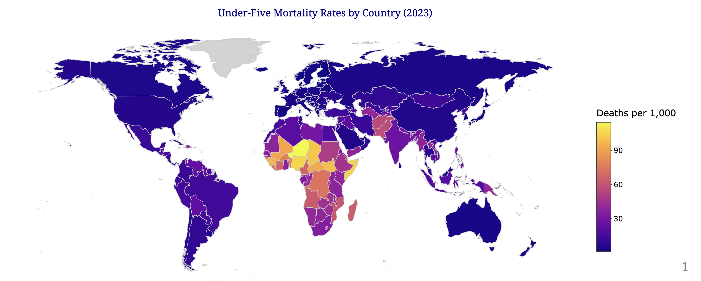
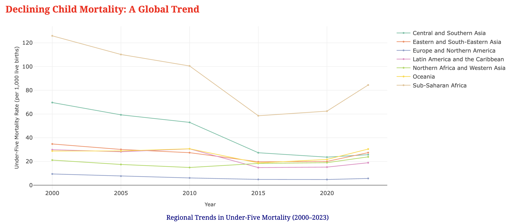
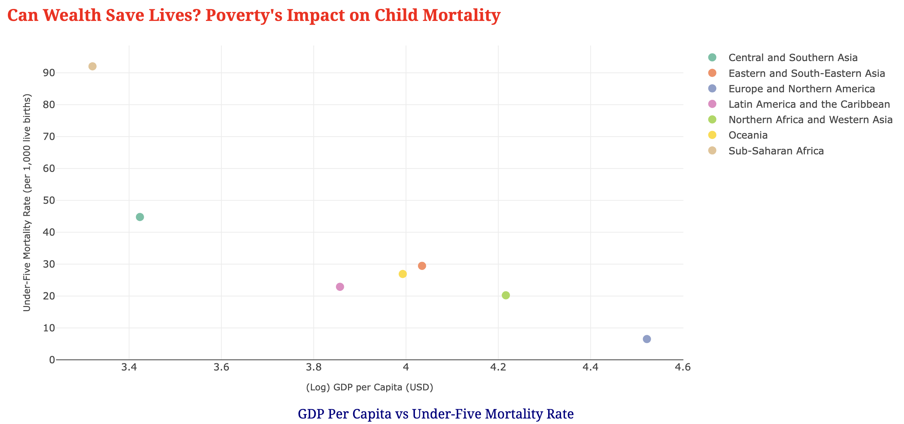
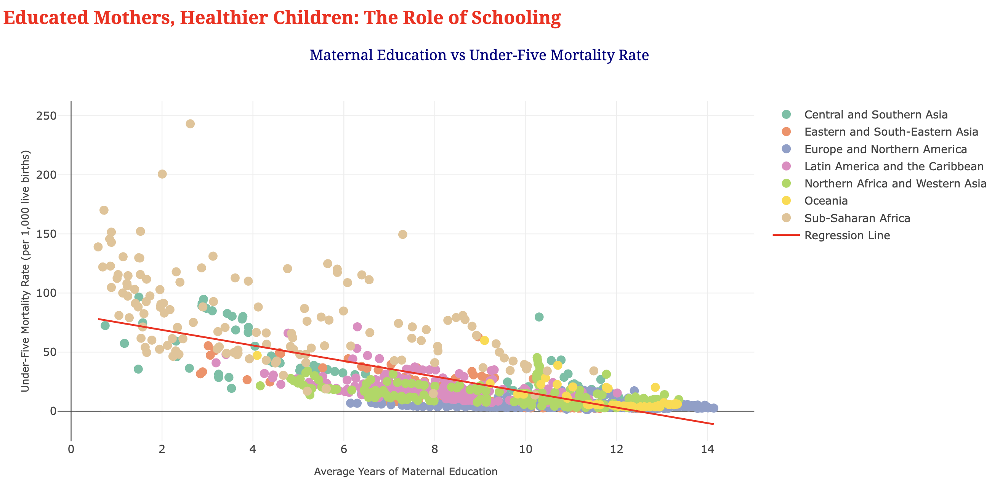
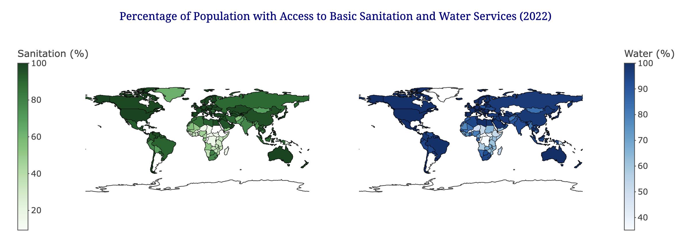
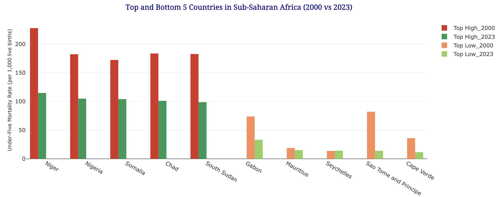

Geography of Survival
Child Mortality Analytics
An interactive data storytelling and predictive analysis project developed in R and rendered via the Xaringan architecture. Investigates macro-level global health trends, maternal education weights, and socioeconomic indicators utilizing open-source global datasets.
Core Technologies Implemented
Technical Project Objective
This data science project was engineered to execute robust, programmatic statistical audits on dynamic human development metrics. The primary objective focused on creating a reproducible pipeline for cleaning messy, unaligned geographic country codes and transforming multi-decade indicators into cohesive interactive structures for impactful public health storytelling.
Multivariate Analysis: Data & Infrastructure Insights
Beyond mapping general numbers, the analytical scripts actively layered disparate environmental metrics to understand key structural drivers behind child health persistence:
Socioeconomic Wealth Thresholds
Analyzed the explicit non-linear returns of income on survival by transforming country GDP allocations into algorithmic Log-scale profiles. This isolated clear structural variations between high-capital frameworks ($33,000+ per capita) and low-resource zones.
Sanitation & Water Infrastructure
Cross-examined population access disparities regarding basic utilities. The scripts successfully caught critical infrastructure mismatches in emerging nations, showing high drinking water deployment alongside heavily lagging localized sewage pipelines.
Healthcare Workforce Density
Faceted multidimensional regional data streams to parse active doctor and nurse counts per 10,000 citizens. The regression output confirmed that severe shortages in clinical workforces act as immediate risk multipliers for critical pediatric cases.
Longitudinal Stagnation Metrics
Monitored ongoing progress thresholds from the year 2000 up to recent 2023 evaluations. The analysis successfully captured a historic global health anomaly, proving that systemic global pandemic impacts led to noticeable mortality rate spikes across all analyzed continents.
Project Documentation & Demo
Production Environment Walkthrough

Engineered an interactive geospatial heat map linking multi-sourced country health records with coordinate polygons to map global mortality variations. The program automatically isolates high-risk territories by color-coding dense clusters—such as Sub-Saharan Africa and parts of South Asia—where under-five mortality rates consistently climb past critical boundaries (exceeding 50 deaths per 1,000 live births).

Developed responsive multi-line temporal visualization algorithms utilizing the Plotly engine to measure health policy outcomes. While tracing sharp macro-level historic reductions across vulnerable geographical clusters, the telemetry successfully isolated distinct global performance stagnation and minor reversals between 2020 and 2023, exposing supply-chain and health-delivery disruptions triggered by recent systemic global crises.

Constructed macro-economic scatter analytics mapping transformed Log10 GDP per Capita against child mortality. The output profiles highly isolated economic partitions: high-income frameworks (Europe and Northern America averaging over $33,000) sustain minimized mortality floors, whereas lower economic means (Sub-Saharan Africa averaging around $2,000) face disproportionate systemic survival burdens.

Constructed advanced scatter configurations intersected with mathematical linear regression layers to mathematically test external socioeconomic drivers against child survival odds. The model processes heavy numerical indicators including average maternal schooling years, exposing a strict inverse correlation that visually verifies the survival protection returns driven by early female education.

Leveraged Plotly's geospatial subplot structures to map coupled environmental metrics: Sanitation coverage (Greens) and Water access (Blues). The multi-map alignment exposes key architectural infrastructure mismatches in emerging nations, showing high drinking water deployment (~90%) running concurrently alongside heavily lagging localized sewage and hygiene pipelines (~60%).

Architected a grouped bar configuration mapping the localized performance asymmetries within Sub-Saharan Africa by tracking its top 5 and bottom 5 mortality boundaries. The visualization highlights monumental macro-level health recoveries (such as Niger dropping by over 110 deaths per 1,000), while systematically exposing regional anomalies like Seychelles where progress encountered structural stagnation.
Key Outcomes & Policy Retrospective
The statistical exploration delivered several critical conclusions that translate raw data points into actionable insights for public health policy:
- The Power of Education: The linear regression pipelines mathematically verified that maternal education acts as a massive catalyst for child survival. Every additional year of schooling completed by mothers yields an explicit drop in infant mortality, proving that educational investment directly transforms familial healthcare practices.
- Infrastructure Desynchronization: The dual geospatial mapping caught an alarming mismatch in development priorities: developing nations are rapidly scaling pure drinking water networks but are failing to match that speed with basic waste management and sewage infrastructure, creating unseen domestic health risks.
- Pandemic Shockwaves: The longitudinal tracking models caught a rare, historic trend inversion. The years 2020–2023 exposed a shared upward spike in mortality cross-continentally, validating the devastating impact that global economic shocks and supply-chain breakdowns have on primary pediatric defense layers.
- Data Storytelling via Xaringan: Successfully compiled the entire interactive analytics architecture into a self-contained web presentation framework. This bridges the gap between pure R programming execution and executive-level public health reporting.